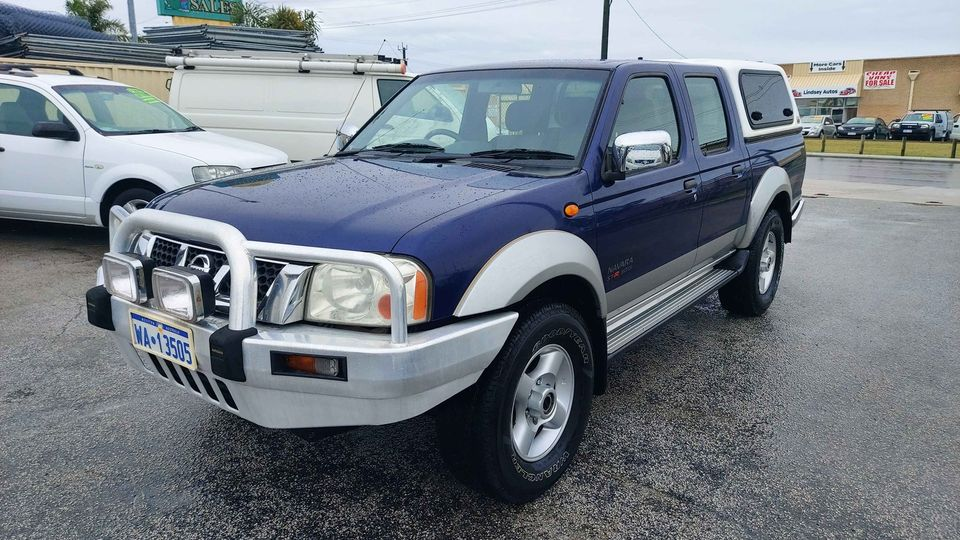

Nissan 4×4 Wreckers is the “go to place” for all your Nissan 4×4 spare parts, recycled parts and Nissan 4×4 wrecking needs. If you need a part for a Nissan 4WD be it a Nissan Patrol, X-Trail, Pathfinder or Navara we’ll most likely have exactly what you need. If you are a mechanic that repairs Nissan 4×4’s and need genuine or recycled Nissan spare parts. motors, gear boxes, diffs, panels, head lights, bull bars, wheels, tyres or anything else, give us a call today to get a quote. We have over 25 years experience in auto spare parts and 4×4 wrecking and our friendly, prompt and professional!

2 Thorburn Drive Toowoomba City, Brockville QLD 4301 Australia 0429 324 849 Website: www.nissan4x4wreckers.com.au Email: parts@nissan4x4wreckers.com.
Where To Buy Nissan 4x4 Spare Parts. Choose Your Choice We have multiple parts that fit most Nissan 4×4’s and our prices are competitive. Nissan LandCruiser Forklift Switch Panel For the LandCruiser we have two parts that fit the forklift panel, one is M10T10 and the other M10F10. Both of these parts have been fully refurbished and look brand new. Both parts are new and they are both of the same type, so they will fit if you order two from us.
Recycling part from your wrecked Nissan 4wd is a crucial part of building your own Nissan 4x4! Our Nissan 4x4 wrecking service is designed to recycle parts from your wrecked Nissan 4WD allowing you to turn your Nissan 4×4 into an all-new and more powerful vehicle! Nissan 4x4 Wreckers are the only Nissan wrecking company in the world to be designated an authorised recycling center by Nissan USA. We provide Nissan wrecking services on all brands of Nissan 4x4’s from the iconic Patrol, X-Trail, Pathfinder, and Navara to a wide variety of sportsmans, sports-utility, 4x4, heavy duty and light duty vehicles. Nissan 4x4 Wreckers To ensure we will be able to give you the best value for money, we accept “as-is” or “as-is/retired” cars, we do not accept “pristine” cars.
Your 4WD will never again be the same, thanks to expert upgrades, refinement and performance engineered into each of our cars. The steering, suspension, engine and drivetrain are upgraded and balanced in each 4×4, and improved oil will flow to every part of your 4WD. Because of all these improvements the 4WD is incredibly durable, and runs like a dream. Nissan 4×4 all-terrain and body repairs The NISSAN 4×4 crew cab is one of the most rugged SUVs available. It's highly adaptable, durable and versatile. We also offer Nissan 4×4 stripped outs, 4×4 reprographics and full body removal Nissan 4×4 All-Terrain Parts Whether you're after all-terrain boots or snow tracks, we have what you need.
If you are after genuine or recycled Nissan 4×4 parts for your 4WD be it a Nissan Patrol, X-Trail, Pathfinder or Navara then visit Nissan 4×4 Wreckers here today and let’s get you the part you need! Don’t worry if the supplier you contact can’t supply you the specific part you need, we have fantastic access to a huge network of Nissan Wrecker dealers around the world who’s parts we have scraped from their inventories and get rid of. We’re extremely lucky to be able to do this. We don’t scrap the wrecking stock, we actually get permission to scrap, dismantle and destroy the wrecks and make them useful as raw material. This is a very labour intensive process that takes time, patience and skill.
Address:103 Sheffield Rd, Welshpool WA 6106
Phone: (08) 9358 1392